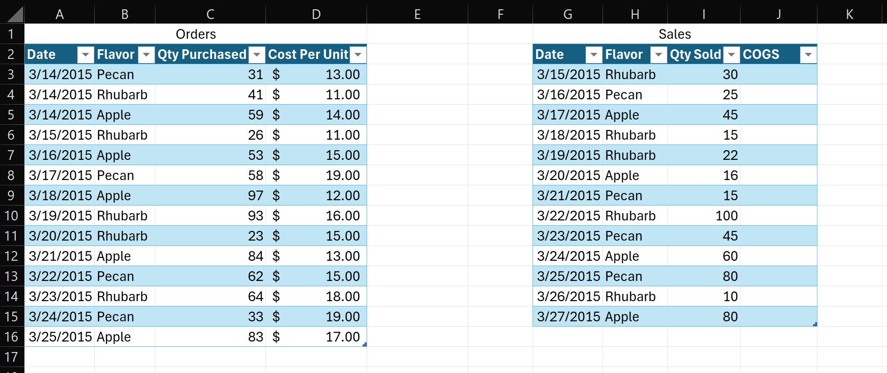
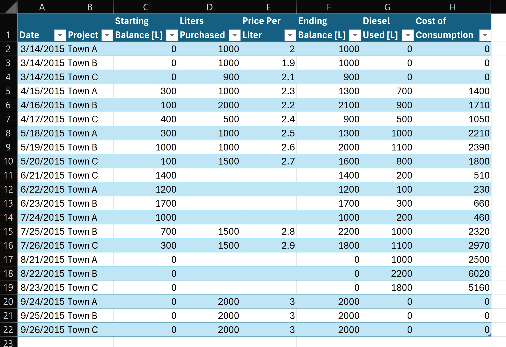

Improved FIFO COGS Tracking in Microsoft Excel
Posted on October 18, 2024 • 20-minute read
Contents
Introduction
This post is an answer to the question asked by Emil, Hasaan Fazal, Jason Varner, and others: can Excel track the cost of goods sold (COGS) using the first-in-first-out (FIFO) inventory valuation standard? I will explain why previous solutions are unsatisfactory and provide what I believe to be a better alternative.
Alternatively, for those in a hurry, here is a quick example to download. It looks like the header image at the top of this post.
Goal
Given a table of orders and a table of sales, create a calculated column, COGS, for the sales table. Ideally, the method should be software agnostic (i.e. have analogs in Google Sheets and LibreOffice Calc), extend easily to the tracking of consumables, and allow for the tracking of different SKUs in the same table.
As an example, consider a pie distributor that sells three different flavors (SKUs) of pie: pecan, rhubarb, and apple. Here, "orders" refers to the purchases made by the distributor of its pie suppliers to restock the distributor's inventory, and "sales" refers to the sales made by the distributor to its customers depleting the distributor's inventory. The distributor's Orders table should have columns for the order date, flavor of pie, quantity purchased, and cost per unit. The Sales table should have columns for sale date, flavor of pie sold, and quantity sold. The distributor desires to add a calculated column to the Sales table containing the COGS for each sale.
Prior Art
Emil provides a quick solution to this problem by tracking the quantity of purchased assets sold and the associated COGS in the Orders table rather than the Sales table. Emil provides a quick solution to this problem by tracking the quantity of purchased assets sold and the associated COGS in the Orders table rather than the Sales table. For each entry in the Orders table, the method calculates the difference between the total number of sold assets from the Sales table and the sum of all previously sold quantities from the Orders table. The quantity of the current order that was sold is then determined by taking the minimum of this calculated remainder and the quantity of the current order. Finally, the COGS is computed by multiplying this sold quantity by the current price per unit.
While Emil's solution is elegantly simple, it has a significant limitation: it tracks COGS in the Orders table rather than the Sales table. This approach, though efficient, may not meet standard FIFO inventory tracking requirements. Most accounting practices and regulatory standards mandate that the cost of goods sold be recorded in the Sales table, not the Orders table.
Hasaan's approach builds upon Emil's solution, adapting it to track COGS in the Sales table using Excel's Data Tables feature. First, the sum of sales is extracted from the Sales table as a static input cell, rather than a calculated value. Next, Emil's solution is applied to each row of the Orders table, calculating the COGS. These individual COGS values are then summed to produce a total COGS for the entire sale. Then, Excel's Data Tables functionality is leveraged to run this method for each row in a newly created Sales table, effectively transferring the COGS tracking to the sales side.
While Hasaan's solution stands out as my favorite among those I found online, it has some limitations. Namely, it lacks the capability to track consumables or handle multiple SKUs simultaneously. Also, the method relies heavily on Excel's Data Tables, a feature for which Google Sheets currently lacks a direct equivalent.
Jason applies similar logic as Hasaan, but replaces Hasaan's Data Tables with massive helper matrices to calculate Emil's intermediate quantities sold from each order. This solution still lacks the ability to track consumables and multiple SKUs simultaneously, but it is easily portable between softwares and results in a Sales table with a COGS column out of the box. Unfortunately, it is not perfectly autonomous; the helper matrices must be manually resized to ensure they always have both more rows and columns than the number of rows in the Orders and Sales tables.
The Limits of Bounded Algorithms
The fundamental challenge in FIFO COGS calculation lies in the complexity of tracking inventory depletion over time. While determining the cost of the oldest goods still in inventory sold (COOGS) for each sale is relatively straightforward, the real difficulty arises when these older goods are exhausted. Calculating the cost of the remaining goods sold (CORGS) from more recent orders requires a recursive function capable of iterating through multiple inventory layers. This type of operation traditionally relies on the μ operator, the mathematical concept behind "while loops" in programming. Excel, despite its widespread use in financial calculations, notably lacked the capability to implement such operations until the introduction of LAMBDA functions. This limitation has been a significant hurdle in developing comprehensive, formula-based FIFO COGS tracking solutions within spreadsheet environments.
To prove that the μ operator is necessary for the calculation of COGS, I must first formalize the CORGS problem in a way that allows for unbounded input. While Excel spreadsheets have a finite number of rows, my goal is to develop an algorithm that does not require adjustments based on data volume. This approach contrasts with Jason's method, which relies on helper matrices that need manual resizing when the number of orders or sales exceeds the initial setup. Such manual intervention is prone to errors and reduces scalability. By formulating CORGS to handle theoretically unbounded input, I can aim to design a more robust algorithm. This algorithm would ideally compute CORGS without requiring manual adjustments, regardless of how the dataset grows over time.
Formalizing the Cost-of-Remaining-Goods-Sold (CORGS) Problem
- Let \(\mathrm{S}=\{\mathrm{s}_1, \mathrm{s}_2, \mathrm{s}_3, \ldots\}\) be an infinite sequence of supply entries, where each \(\mathrm{s}_i\) is a pair \((\mathrm{q}_i, \mathrm{c}_i)\) such that \(\mathrm{q}_i\geq 0\) is the quantity of goods in the \(i\)-th supply entry, and \(\mathrm{c}_i\geq 0\) is the cost per unit of goods in the \(i\)-th supply entry.
- Given a target quantity \(\mathrm{Q}\geq 0\), calculate the total cost \(\mathrm{C}\) of fulfilling this quantity using the FIFO (First-In-First-Out) method from the infinite sequence \(\mathrm{S}\).
- Define \(\mathrm{CORGS}(\mathrm{Q}, \mathrm{S}) = \mathrm{C}\), where:
\begin{equation} \mathrm{C} = \sum_{i=1}^n \left( \mathrm{min}\left(\mathrm{Q}-\sum_{j=1}^{i-1} \mathrm{q}_j, \mathrm{q}_i \right) \times \mathrm{c}_i \right) \end{equation}where \(n\) is the smallest integer such that \(\sum_{i=1}^n \mathrm{q}_i \geq \mathrm{Q}\).
Note that the input sequence \(\mathrm{S}\) is infinite, allowing for truly unbounded input. The calculation requires finding the prefix of \(\mathrm{S}\) (i.e. a finite, initial portion of \(\mathrm{S}\)) that satisfies the condition \(\sum_{i=1}^n \mathrm{q}_i \geq \mathrm{Q}\). The sum in the CORGS calculation is finite (it stops at \(n\)), but \(n\) itself is not known in advance and could be arbitrarily large.
To prove that this formalization of CORGS cannot be computed by any program that always halts without unbounded search, I will use a proof by contradiction. I will assume it can be computed without unbounded search and show that this leads to a contradiction.
Proof by Contradiction that CORGS Cannot be Computed Without Unbounded Search
Theorem: The formalized CORGS problem cannot be computed by any program that always halts without using unbounded search.
- Assumption: Suppose there exists a program \(\mathrm{P}\) that computes \(\mathrm{CORGS}(\mathrm{Q}, \mathrm{S})\) for any input \(\mathrm{Q}\) and \(\mathrm{S}\), always halts, and does not use unbounded search.
- Properties of \(\mathrm{P}\):
- \(\mathrm{P}\) must examine elements of \(\mathrm{S}\) sequentially to maintain the FIFO order.
- \(\mathrm{P}\) must halt after examining a finite number of elements of \(\mathrm{S}\).
- The number of elements \(\mathrm{P}\) examines must be determined by \(\mathrm{Q}\) and the elements of \(\mathrm{S}\) it has seen so far.
- Construct a contradictory input: Let \(\mathrm{Q}\) be any positive real. Define \( \mathrm{S} = \{ \mathrm{s}_1, \mathrm{s}_2, \mathrm{s}_3, \ldots \} \) where:
- For \(i = 1 \ldots k\) (where \(k\) is arbitrarily large): \(\mathrm{s}_i = (0, 0)\) (i.e. quantity 0, cost 0).
- For \(i \gt k: \mathrm{s}_i = (\mathrm{Q}, 1)\) (i.e. quantity \(\mathrm{Q}\), cost 1).
- Run program: \(\mathrm{P}\) must halt after examining some finite number of elements, \(m\). \(\mathrm{P}\) cannot know if \(k \lt m\) or \(k > m\), because it has not used unbounded search. Consider two cases:
- Case 1: If \(k \lt m\), the correct CORGS value is \(\mathrm{Q}\).
- Case 2: If \(k \gt m\), the correct CORGS value is 0 or undefined because the algorithm has not found any stock.
- Contradiction: \(\mathrm{P}\) must produce the same output for both cases because it has examined the same \(m\) elements. However, the correct CORGS values are different for \(k \lt m\) and \(k \gt m\). Therefore, \(\mathrm{P}\) cannot correctly compute CORGS for all inputs.
My assumption that such a program \(\mathrm{P}\) exists leads to a contradiction. Therefore, no such program can exist.
This proof demonstrates that any program that always halts and does not use unbounded search cannot correctly compute CORGS for all possible inputs. The key insight is that without unbounded search, a program cannot distinguish between sequences that differ only after some arbitrarily large index. The necessity of unbounded search arises from the need to find the least \(n\) such that \(\sum_{i=1}^n \mathrm{q}_i \geq \mathrm{Q}\), which cannot be determined in advance for an arbitrary infinite sequence \(\mathrm{S}\).
This proof establishes that unbounded search (the μ operator or an equivalent computational capability) is indeed necessary for computing CORGS in its most general, unbounded form.
Thankfully, Excel's LAMBDA functions can actually be μ-recursive functions, allowing us to define any computable function in Excel. Further, analogs of Excel's LAMBDA functions exist in Google Sheets and LibreOffice Calc.
Improving on Prior Solutions
The solution presented here will come in two parts: calculating the cost of the oldest goods (still in inventory) sold (COOGS) and calculating the cost of the remaining goods sold (CORGS). COGS will therefore be the sum of COOGS and CORGS.
Begin with the two tables illustrated below. The first table, Orders, has columns "Date," "Flavor," "Qty Purchased," and "Cost Per Unit" in columns A through D of the spreadsheet. The second table, Sales, has columns "Date," "Flavor," "Qty Sold," and "COGS" in columns G through J of the spreadsheet. Row 1 is reserved for the table names. Row 2 is reserved for the column headers. The data begins in row 3. With the exception of the COGS column, both tables are entirely filled with data representing the details of various orders and sales. Note that the tables need not be the same size, dates can be repeated, and both tables should be sorted by date.
Calculating Cost of Oldest Goods Sold (COOGS)
- Add columns to track the cumulative quantities of goods ordered and sold to the Orders and Sales tables, respectively. Add a column "Cumulative Ordered" to the Orders table in column E of the Excel workbook. Enter the formula
=SUMIF(B$3:B3, [@Flavor], C$3:C3)into cell E3, then copy that cell into the remaining rows in that column. Likewise, add a column "Cumulative Sold" to the Sales table in column K of the Excel workbook. Enter the formula=SUMIF(H$3:H3, [@Flavor], I$3:I3)into cell K3, then copy that cell into the remaining rows.This works because SUMIF is an Excel function that sums values based on a condition.
B$3:B3andH$3:H3are the ranges for the condition (Flavor column of the Orders and Sales tables, respectively), with the top row anchored.[@Flavor]is the criterion (the Flavor of the current row).C$3:C3andI$3:I3are the ranges to sum (Qty Purchased and Sold columns), with the top row anchored. This formula calculates the running total of quantities purchased and sold, respectively, for each flavor up to the current row. - Add a column "Index of Last Sale" to the Sales table in column L. Enter the formula
=IFERROR(XMATCH([@Flavor], H$2:H2, 0, -1)-1, 0)into cell L3, copying it into the remaining rows.The XMATCH function is used to find the position of a match in an array.
[@Flavor]is the lookup value, which is the flavor of the current row.H$2:H2is the lookup array, the Flavor column in the Sales table up to the current row.0is the match mode, specifying an exact match.-1is the search mode, indicating to search from last to first (or bottom to top). The result of XMATCH is subtracted by 1 (XMATCH(...) - 1) to account for the header row. The IFERROR function is used to handle cases where XMATCH does not find a match. If XMATCH fails (e.g., if this is the first sale of a particular flavor), IFERROR will return 0.The purpose of this formula is to find the index of the last sale of the same flavor before the current row. It searches the Flavor column from the current row upwards for a match to the current flavor. If a match is found, it returns the index of that row. If no match is found (meaning this is the first sale of this flavor), it returns 0.
This "Index of Last Sale" helps determine the state of inventory before the current sale. It is used in subsequent formulas to calculate quantities and costs based on the previous sales of the same flavor.
- Add a column "Total Qty Sold Before This Sale" to the Sales table in column M. Enter the formula
=[@[Cumulative Sold]] - [@[Qty Sold]]into cell M3, copying it into the remaining rows.By subtracting the current sale quantity from the cumulative sold quantity, I get the total quantity sold before this particular sale. The purpose of this calculation is to determine how much of a particular flavor had been sold prior to the current sale.
- Add a column "Index of Oldest Order Still in Inventory Before This Sale" to the Sales table in column N. Enter the formula
=XMATCH([@[Total Qty Sold Before This Sale]], FILTER(Orders[Cumulative Ordered], (Orders[Flavor]=[@Flavor]) * (Orders[Date]<[@Date])), 1, 1)into cell N3, copying it into the remaining rows.The FILTER function filters the "Cumulative Ordered" column from the Orders table. It applies two conditions. First,
Orders[Flavor]=[@Flavor]only includes rows where the flavor matches the current sale's flavor. Second,Orders[Date]<[@Date]only includes orders with dates earlier than the current sale date. The result is an array of cumulative ordered quantities for the same flavor, from orders placed before the current sale.The XMATCH function looks for
[@[Total Qty Sold Before This Sale]], the total quantity sold before this sale, in the filtered array of cumulative ordered quantities. Using a match mode of1finds the smallest value that is greater than or equal to the lookup value, and a search mode of1returns the first match in the lookup array.This formula first filters the Orders table to only consider relevant orders (same flavor, earlier dates). Then, it searches this filtered list of cumulative ordered quantities to find the first entry that is greater than or equal to the total quantity sold before this sale. The result is the index of the oldest order that still has inventory available for this sale. This index helps identify which historical order's inventory and cost should be used for this sale.
- Add a column "Qty of Oldest Order Left in Inventory Before This Sale" to the Sales table in column O. Enter the formula
=INDEX(FILTER(Orders[Cumulative Ordered], (Orders[Flavor]=[@Flavor]) * (Orders[Date]<[@Date])), [@[Index of Oldest Order Still in Inventory Before This Sale]]) - IF([@[Index of Last Sale]]=0, 0, INDEX(K2:K$3, [@[Index of Last Sale]]))into cell O3, copying it into the remaining rows.This formula consists of two main parts connected by a subtraction operation:
-
INDEX(FILTER(Orders[Cumulative Ordered], (Orders[Flavor]=[@Flavor]) * (Orders[Date] <[@Date])), [@[Index of Oldest Order Still in Inventory Before This Sale]])The FILTER function filters the "Cumulative Ordered" column from the Orders table, including only rows where the flavor matches the current sale's flavor and the order date is earlier than the current sale date. The INDEX function retrieves the value from the filtered array at the position specified by "Index of Oldest Order Still in Inventory Before This Sale." This part gives us the cumulative quantity ordered up to the oldest order that still has inventory available for this sale.
-
IF([@[Index of Last Sale]]=0, 0, INDEX(K2:K$3, [@[Index of Last Sale]]))The IF function checks if there was a previous sale of this flavor. If "Index of Last Sale" is 0 (meaning this is the first sale of this flavor), it returns 0. Otherwise, it uses INDEX to retrieve the cumulative sold quantity from the previous sale (column K). By subtracting the second part from the first part, I get the quantity of the oldest order that is still left in inventory before this sale.
-
- Add a column "Cost Per Unit of Oldest Inventory" to the Sales table in column P. Enter the formula
=INDEX(FILTER(Orders[Cost Per Unit], Orders[Flavor]=[@Flavor]), [@[Index of Oldest Order Still in Inventory Before This Sale]])into cell P3, copying it into the remaining rows.The FILTER function filters the "Cost Per Unit" column from the Orders table. It only includes rows where the flavor in the Orders table matches the flavor of the current sale. The INDEX function retrieves a value from the filtered array of costs using the "Index of Oldest Order Still in Inventory Before This Sale" as the row number to determine which cost to retrieve. Thus, it picks the cost per unit that corresponds to the oldest order that still has inventory available for this sale.
- Add a column titled "Qty of Oldest Order Sold" to the Sales table in column Q. Enter the formula
=MIN([@[Qty of Oldest Order Left in Inventory Before This Sale]], [@[Qty Sold]])into cell Q3, copying it into the remaining rows.If the quantity of the oldest order left in inventory is larger than or equal to the quantity sold in this transaction, the formula will return the quantity sold. This means the entire sale can be fulfilled from the oldest inventory. If, instead, the quantity of the oldest order left in inventory is smaller than the quantity sold in this transaction, the formula will return the quantity of the oldest order left. This means only a portion of the sale can be fulfilled from the oldest inventory, and the rest will need to come from newer inventory.
- Add a column titled "COOGS" to the Sales table in column R. Enter the formula
=[@[Qty of Oldest Order Sold]] * [@[Cost Per Unit of Oldest Inventory]]into cell R3, copying it into the remaining rows.This multiplies the quantity of the oldest inventory being sold in this transaction by the cost per unit of that oldest inventory, resulting in the total cost of the oldest goods sold in this transaction.
- Add a column titled "Additional Qty Needed" to the Sales table in column S. Enter the formula
=[@[Qty Sold]] - [@[Qty of Oldest Order Sold]]into cell S3, copying it into the remaining cells.This subtracts the quantity of the oldest inventory being sold in this transaction from the total quantity sold in this transaction, resulting in the quantity of inventory being sold in this transaction coming from newer orders.
Calculating Cost of Remaining Goods Sold (CORGS)
- Navigate to the Formulas tab and click Name Manager.
- Click "New…" to add a new Name.
- Enter "CORGS" into the "Name" input.
- In the "Refers to" input, enter the following formula:
=LAMBDA(moreStockNeeded, oldestOrderIndex, supply, costPerUnit, LET( supplyFromOldestOrder, INDEX(supply, oldestOrderIndex, 1), costPerUnitOfOldestOrder, INDEX(costPerUnit, oldestOrderIndex, 1), IF(moreStockNeeded <= supplyFromOldestOrder, moreStockNeeded * costPerUnitOfOldestOrder, supplyFromOldestOrder * costPerUnitOfOldestOrder + CORGS(moreStockNeeded - supplyFromOldestOrder, oldestOrderIndex+1, supply, costPerUnit) ) ) )Note that the usage of LET is not required, but it is helpful to improve readability and performance. Also, note that the function is recursive, so if you change the name in the "Name" input, you must also change the name in the "Refers to" input.
- Click "OK."
- Confirm your LAMBDA function is listed in the Name Manager and click "Close."
-
Add a column titled "CORGS" to the Sales table in column S. Enter the following formula into cell T3, copying it into the remaining cells:
=LET(filteredSupply, FILTER(Orders[Qty Purchased], (Orders[Flavor]=[@Flavor]) * (Orders[Date]<[@Date])), filteredCostPerUnit, FILTER(Orders[Cost Per Unit], (Orders[Flavor]=[@Flavor]) * (Orders[Date]<[@Date])), IF([@[Index of Oldest Order Still in Inventory Before This Sale]] >= ROWS(filteredSupply), 0, CORGS([@[Additional Qty Needed]], [@[Index of Oldest Order Still in Inventory Before This Sale]]+1, filteredSupply, filteredCostPerUnit)))Note that, here too, the usage of LET is not required.
The CORGS LAMBDA function is a recursive function designed to calculate the cost of goods sold for the portion of a sale that could not be fulfilled by the oldest inventory. The function takes four parameters:
moreStockNeeded: The quantity still needed to fulfill the saleoldestOrderIndex: The index of the oldest order to considersupply: An array of quantities from each ordercostPerUnit: An array of costs per unit for each order
The LET function defines two new variables:
supplyFromOldestOrder: The quantity available from the oldest order being consideredcostPerUnitOfOldestOrder: The cost per unit of the oldest order being considered
The IF statement contains the main function logic where the function decides whether to recurse or return a final value. If the needed quantity is less than or equal to the supply from the oldest order, it calculates the cost by multiplying the needed quantity by the cost per unit. Otherwise, it calculates the cost of using all of the oldest order's supply, then recursively calls itself to calculate the cost of the remaining needed quantity, moving to the next oldest order.
Put differently, the function starts with the oldest order that still has inventory available. It checks if this order can fulfill the entire remaining quantity needed. If it can, it calculates the cost and returns it. If it cannot, it calculates the cost of using all available inventory from this order, subtracts the used quantity from the total needed, moves to the next oldest order, and recursively calls itself with these updated values. This process continues until all needed quantity is accounted for. This recursive approach allows the function to handle sales that span multiple orders with different costs.
The formula in the CORGS column of the Excel table applies the CORGS LAMBDA function with filters to allow for multiple SKUs and an IF statement to avoid errors on the first order. The let function defines two new variables, filteredSupply and filteredCostPerUnit, corresponding to the quantities purchased for orders of the same flavor and before the current sale date and the cost per unit for the same orders. The IF statement checks if there are any relevant orders left to consider. If the index of the oldest order with inventory is greater than or equal to the number of filtered orders, it returns 0 (no more orders to consider). Otherwise, it calls the CORGS function. Finally, it calls the CORGS LAMBDA function discussed above, with these arguments:
[@[Additional Qty Needed]]: The quantity still needed after using the oldest inventory[@[Index of Oldest Order Still in Inventory Before This Sale]]+1: Moving to the next oldest orderfilteredSupply: The array of relevant order quantitiesfilteredCostPerUnit: The array of relevant costs per unit
Calculating COGS
Finally, return to the COGS column (J) in the Sales table and enter the formula =[@COOGS] + [@CORGS] into each cell. If you want, you can safely hide all the helper columns, E and K through T.
Extension to Consumables
Some SKUs, like diesel in the tank of a backup generator for a solar mini-grid, do not have points of discrete outflow, and therefore cannot be tracked simply in a "Sales" table. Instead, inventory is tracked in a single table with columns for date, SKU, starting balance, qty purchased, and price per unit. The rows, sorted by date, serve a dual purpose: measuring current supply—and therefore consumption since the previous row—of an SKU, and recording new inventory if an order has been made.
Consider an example diesel tracker for a company's three mini-grids. The table has the above mentioned columns: Date, Project, Starting Balance, Liters Purchased, and Price Per Liter, where Project is the SKU, Starting Balance is the amount of diesel in the tank prior to the diesel purchase, and Liters Purchased and Price Per Liter may be left zero if no diesel was purchased on that date. Each row corresponds to a different log of the diesel balance and optional diesel purchase for a mini-grid. I can extend the above methodology for calculating COGS to compute a FIFO "Cost of Consumption" for diesel consumed between each log recorded in a row of the table.
- Add a column "Ending Balance" that is the sum of the Starting Balance and the Liters Purchased.
- Use the method for calculating the "Index of Last Sale," above, to calculate an "Index of Last Entry."
- Add a column "Diesel Used" using the formula
=IF([@[Index of Last Entry]]=0, 0, INDEX([Ending Balance], [@[Index of Last Entry]]) - [@[Starting Balance]]). This formula checks to see if the entry is the first of its Project, in which case the diesel usage is assumed to be zero. Otherwise, it returns the difference between the Ending Balance of the previous row from this Project and the Starting Balance of the current row.
The remaining columns can be calculated using the same methodology as the above COGS calculations, although you may want to adjust the column names for relevance, with the following changes to account for there being no Orders table:
- Instead of filtering ranges to precede the current row's date, you can adjust the array input of the FILTER function to include only rows above the current row using Excel's structured referencing. For example, if the Cumulative Supply column is in column K, the Project names are in column B, and row 1 is reserved for column headers, then the filtered Cumulative Supplies could be calculated using
FILTER(K$1:K9,B$1:B9=[@Project])for row 9. - You must enclose the formulas for "Index of Oldest Diesel Still in Tank Before This Consumption," "Liters of Oldest Diesel Left in Tank Before This Consumption," and "Price Per Liter of Oldest Diesel"—analogous to "Index of Oldest Order Still in Inventory Before This Sale," "Qty of Oldest Order Left in Inventory Before This Sale," and "Cost Per Unit of Oldest Inventory," respectively—in IF statements that return 0 if the Index of Last Entry is 0.
I have included a working example of a FIFO diesel tracker in the example download.
Conclusion
If you are in charge of your company's inventory tracking and reporting standards, use AVCO instead of FIFO. It is simpler to calculate, hedges against inflation for a business's tax liability, and is allowed by both the International Financial Reporting Standards and the Generally Accepted Accounting Principles.
If you are not in charge, and your boss requires you use FIFO, I hope this tutorial saves you time.